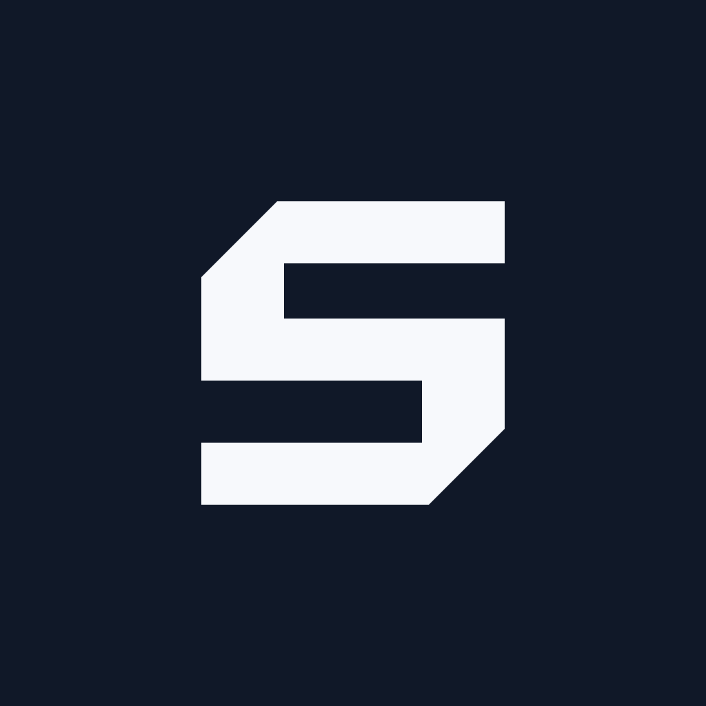
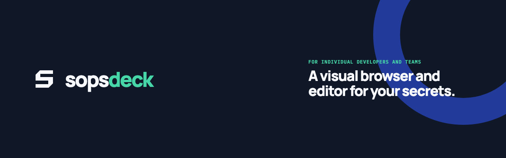
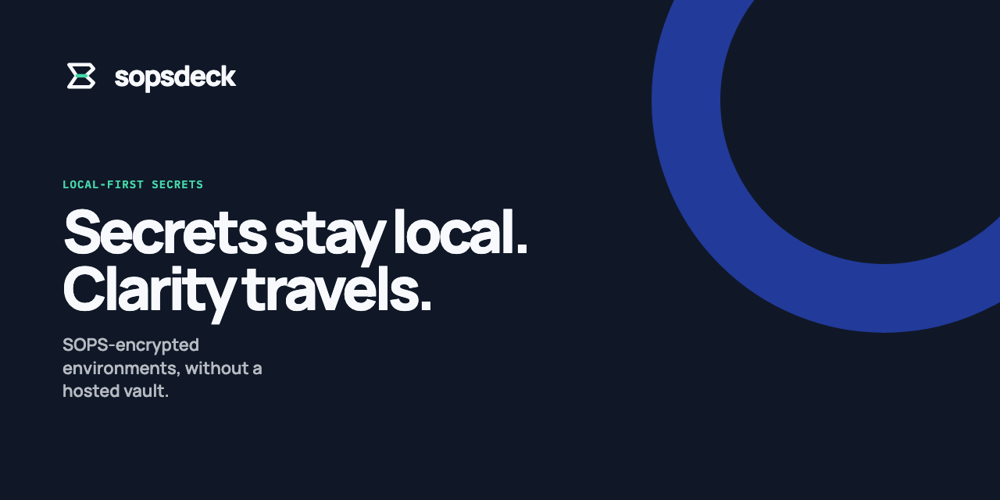
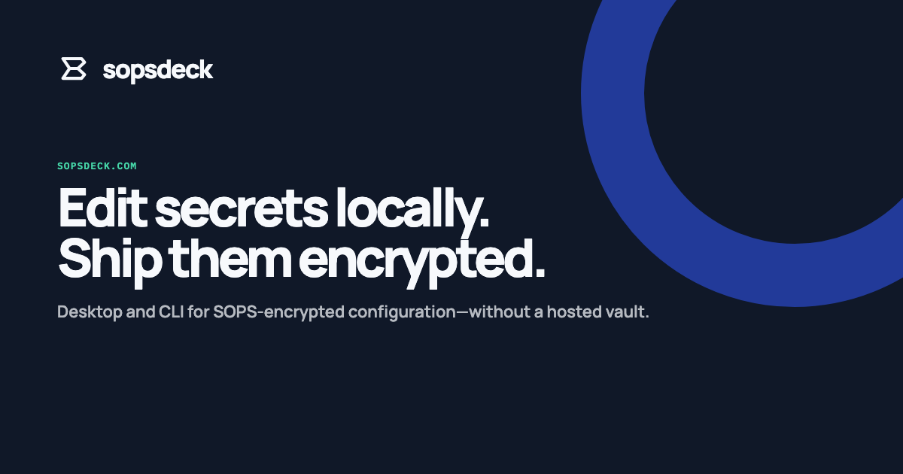
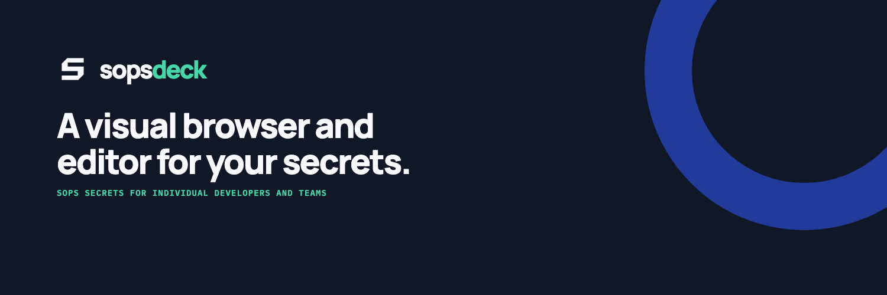

Recommended square · app + GitHub

Same art, different masks. Upload export/github-org-avatar.png to the org;
the app icon master is export/app-icon.png.
The GitHub org image and app icon share one compact structural-monogram master: Vault Ink field, Local Paper mark, and the thicker small-size proof weight. Heroes keep the display-weight mark plus wordmark. GitHub orgs have no cover photo — use the square as the profile image, and the wide hero at the top of the org README.

Same art, different masks. Upload export/github-org-avatar.png to the org;
the app icon master is export/app-icon.png.
github-org-avatar.pngOrg profile image · 1024²github-readme-hero.pngOrg README banner · 1280×400github-social-preview.pngRepo social preview · 1280×640
og-image.pngSite Open Graph · 1200×630social-banner.pngWide header · 1500×500app-icon.pngDock / installer master · 1024²lockup-dark.pngTransparent wordmark for inklockup-light.pngTransparent wordmark for paper



Regenerate with bun scripts/brand-export.mjs. Sources live in
brand/svg and brand/templates.